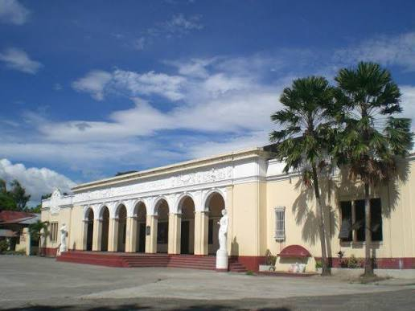

Our Mission
To provide quality, accessible education in a safe and supportive environment where every learner can grow academically, socially, and morally.

When the school opened on July 1, 1902, as Instituto Rizal (later Rizal Institute in 1913), it had no campus of its own. For nearly three decades, classes were held in spacious houses and dormitories rented from local landowner Don Antonio Jayme, and later at the old site that eventually became Rizal Elementary School.
In 1927, the Philippine Legislature funded a permanent campus along Araneta Street under the public works Appropriations Act. Because the budget line item labeled the project "The Construction of Bacolod High School," builders carved "Bacolod High School" into the concrete facade. Even when classes finally moved in during September 1931 and administrators kept the official name Negros Occidental High School, that stone inscription remained.
Just over a decade after opening, the building's peaceful academic life stopped when Japanese forces occupied Bacolod in May 1942. Because of its prominent location, thick concrete walls, and wide layout along Araneta Street, the Imperial Japanese Army commandeered the main building as a military headquarters and garrison. During the occupation, the campus grounds also served as a temporary burial site for Filipino soldiers and guerrilla fighters before liberation in 1945.
After the war, the building returned to educating generations of Negrenses, surviving several institutional shifts:
-1970: Under Republic Act No. 5694, the school was briefly renamed Negros Occidental General Comprehensive High School (NOGCHS) to reflect an expanded vocational and academic curriculum.
-1983: Through Batas Pambansa Bilang 2193, it officially reverted to Negros Occidental High School.
In 2002—the school's centennial year—the National Historical Commission of the Philippines (then the National Historical Institute) installed a Level II historical marker recognizing the site's role in Philippine education and wartime history. Today, its Neo-Classical columns, arched colonnade, and Gabaldon-inspired classrooms still house the school's main administrative offices at the heart of the modern campus.
Negros Occidental High School was founded in 1902 and is a public secondary school in Bacolod City. For over a century, it has welcomed students from across the province.
Our teachers and staff give every student a strong academic foundation, good values, and the confidence to take on college, work, or community service.
Tradition, Excellence, and Service guide everything we do, and every Nohsian carries them beyond graduation.
To provide quality, accessible education in a safe and supportive environment where every learner can grow academically, socially, and morally.
A community of competent, responsible, and caring Nohsians who contribute to a better Negros and a better Philippines.
The people who have led Negros Occidental High School since it was founded in 1902.
Later, Filipino educators took over the school administration as high school principals.